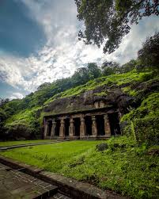
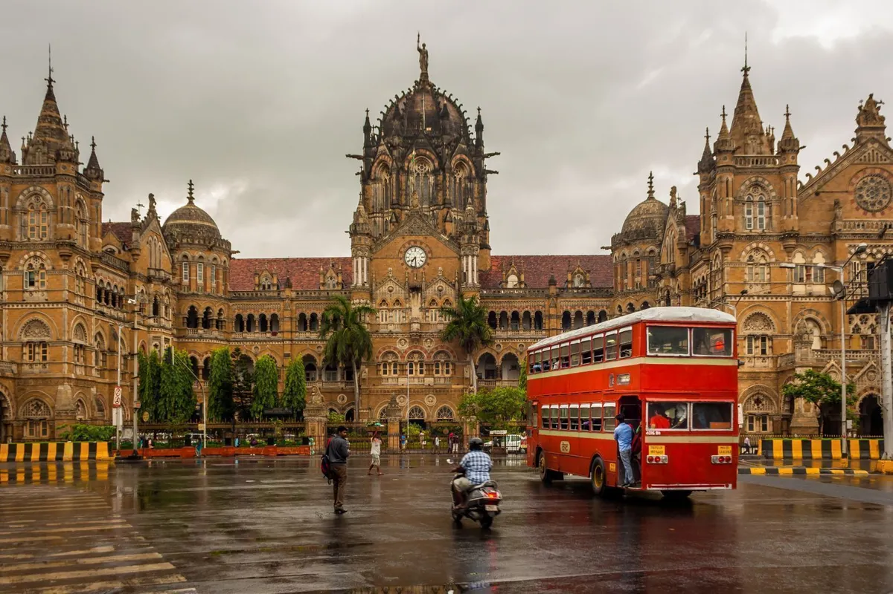
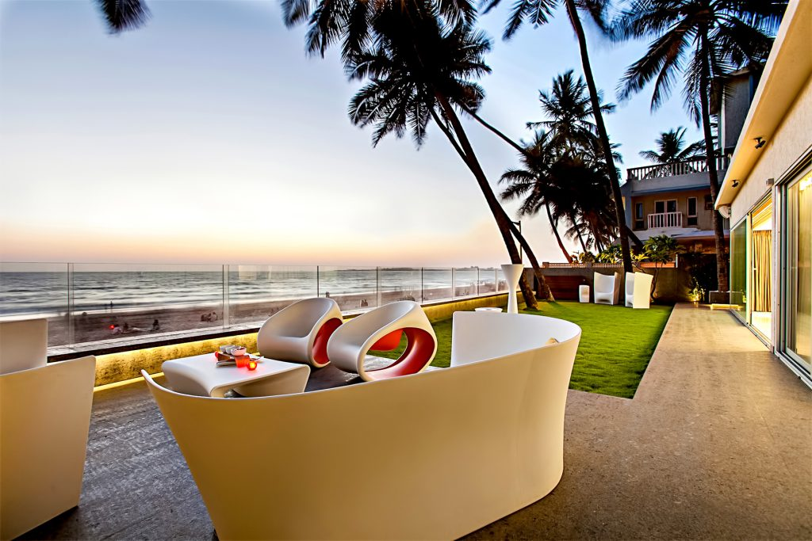

Gateway of India
The iconic Gateway of India stands as a majestic symbol of Mumbai, overlooking the Arabian Sea.
READ MORE »
Marine Drive
Also called the "Queen’s Necklace," Marine Drive is a 3.6 km boulevard perfect for evening strolls.
READ MORE »

Elephanta Caves
A UNESCO World Heritage Site, Elephanta Caves are famous for rock-cut temples dedicated to Lord Shiva.
READ MORE »

Chhatrapati Shivaji Terminus
A UNESCO World Heritage Site, CST is an outstanding example of Victorian Gothic architecture in India.
READ MORE »

Juhu Beach
One of Mumbai’s most popular beaches, Juhu is famous for sunsets, street food, and Bollywood vibes.
READ MORE »
Sanjay Gandhi National Park
An oasis in the bustling city, this park is home to diverse wildlife and the famous Kanheri Caves.
READ MORE »